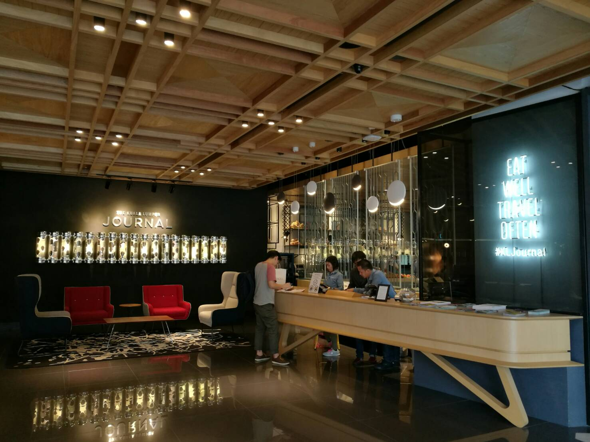
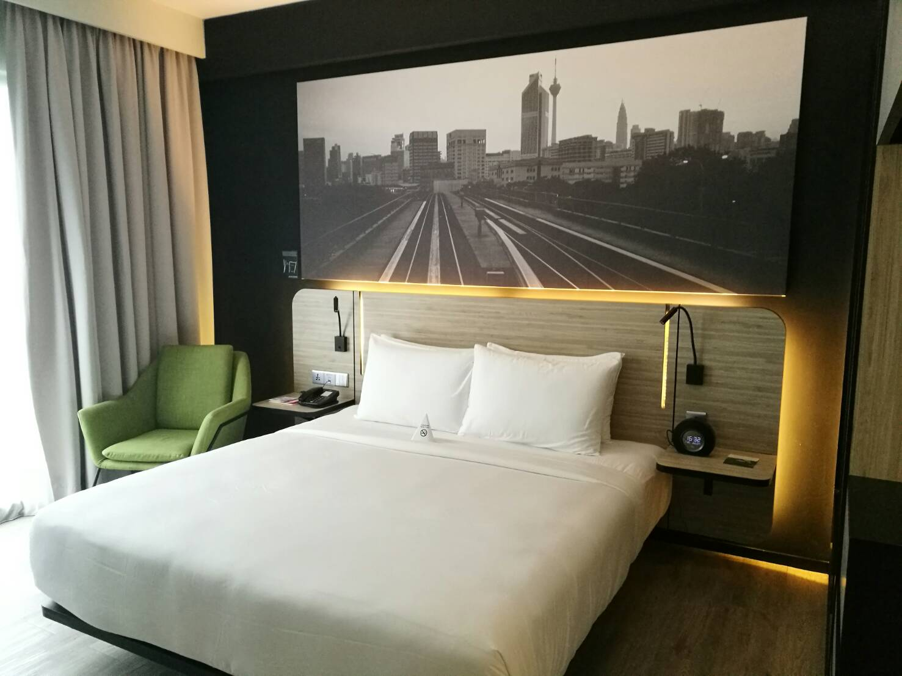
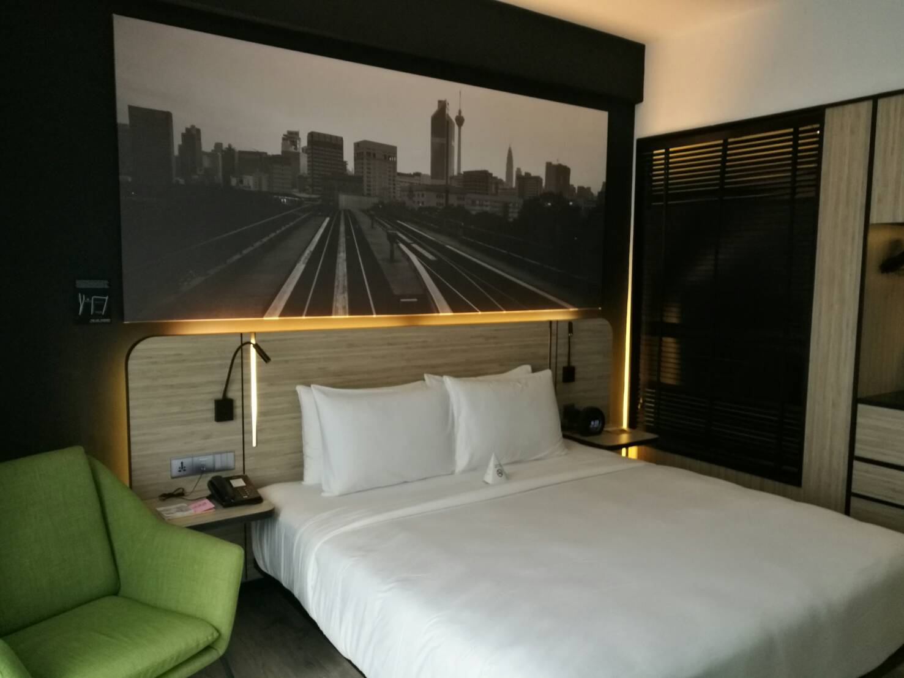
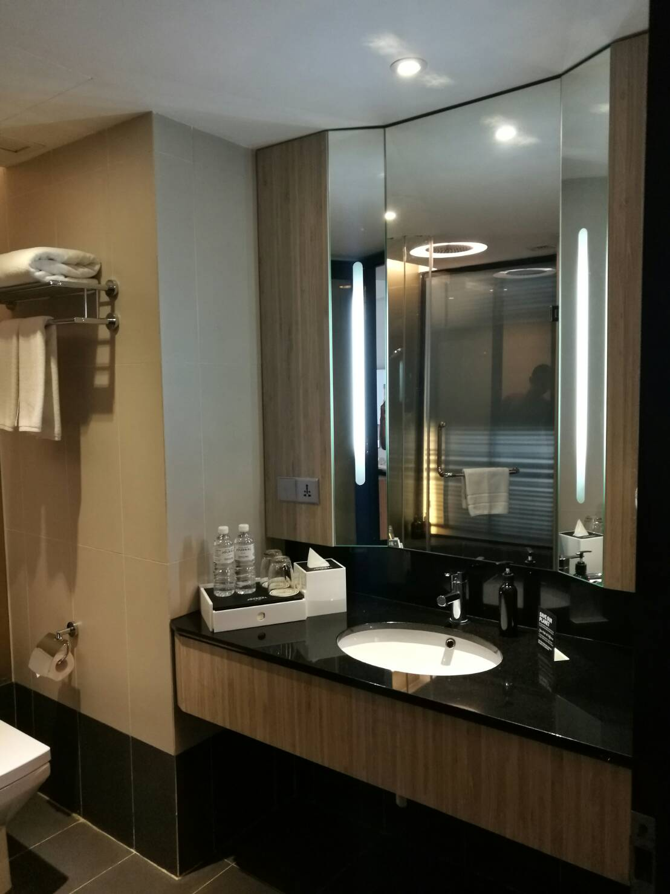
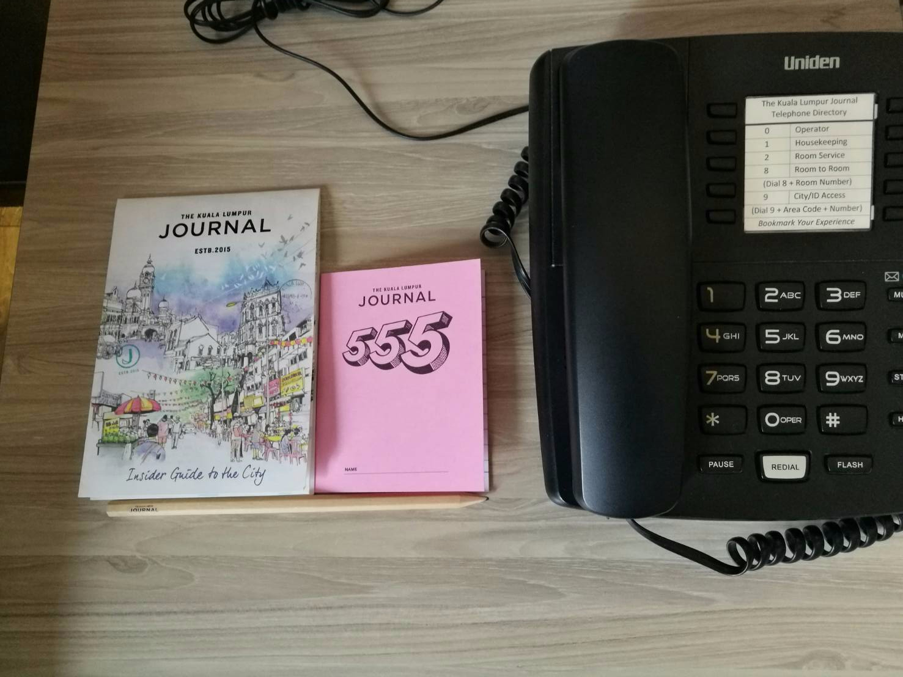

Journal Hotel Kuala Lumpur
Headed to Kuala Lumpur recently, and we stayed at the Journal Hotel Kuala Lumpur. The price was about $100 a night and its a 5 min walk from Pavilion and super near Bukit Bintang. In looking for a hotel in KL we had a budget of a $100 or less and given our budget, we thought we might as well try something more boutique. Check in was a breeze and I really liked the interior design of the lobby! 🙂
#eatwelltraveloften #kljournal Pictures of the room!
 The blinds open up to the toilet but its a frosted glass. I think it would have been better if it was a see through glass as there is already a set of blinds covering it plus it would make the room bigger. When the blinds are raise the room suddenly feels much smaller.
The toilet! It had a rain shower but no bathtub!
Some collaterals

This lovely collateral was given in each room! The information on the collateral was really helpful! It like told you where you could have local food, what was in the area etc etc. It was a very thoughtful collateral and a very nice touch to the room! Another plus point for the hotel was that the staff was really friendly! They generally did well and were trying their best to make things work though they seemed like they were new. We had breakfast there and though operationally it was a bit messy, the staff tried their best to respond to our request and make things work out. There were 2 components to the breakfast, the buffet as well as 4 main items which you can order. I noticed that our food sat in the service window for quite a while before it was picked up. Another thing was that we had to remind the staff about the things which we ordered from the drinks to the food. In general when we asked for things they had a good attitude and saw to it promptly. The area in which the hotel sat in was not the most beautiful or glamourous but it’s a good base for exploration.